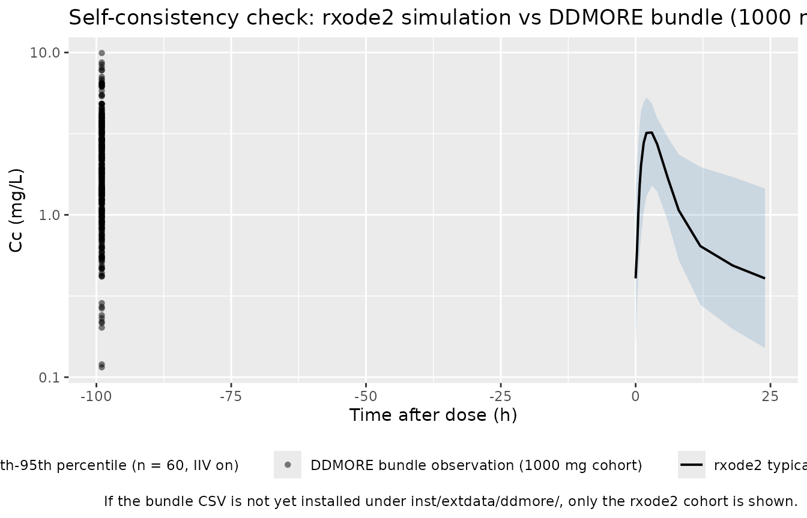
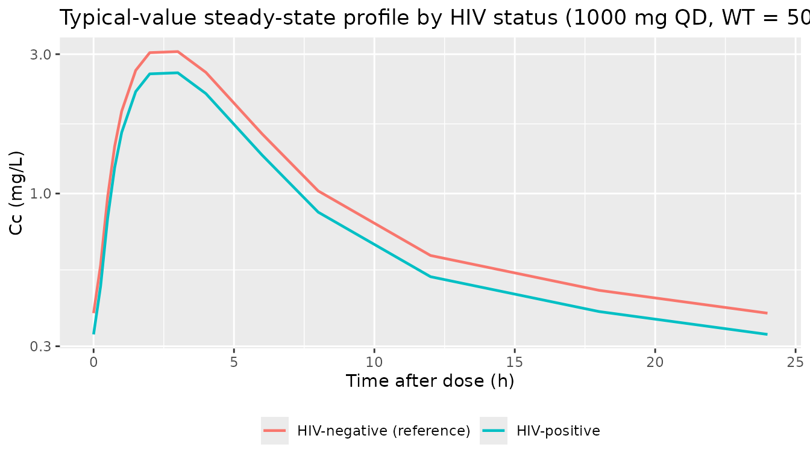
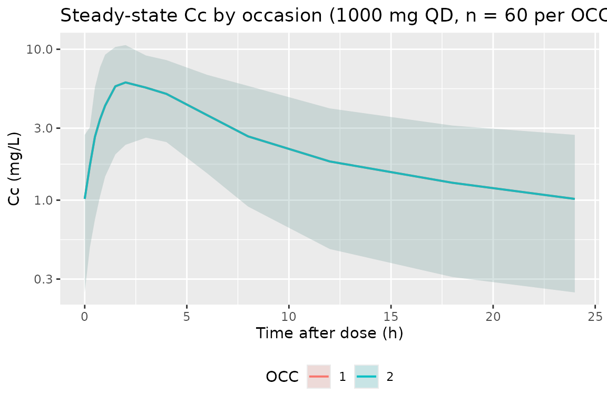

Jonsson_2011_ethambutol
Source:vignettes/articles/Jonsson_2011_ethambutol.Rmd
Jonsson_2011_ethambutol.RmdModel and source
- Citation: Jonsson S, Davidse A, Wilkins J, Van der Walt JS, Simonsson US, Karlsson MO, Smith P, McIlleron H. (2011). Population pharmacokinetics of ethambutol in South African tuberculosis patients. Antimicrob Agents Chemother 55(9):4230-7. doi:10.1128/AAC.00274-11. DDMORE Foundation Model Repository: DDMODEL00000220.
- Description: Two-compartment population PK model for oral ethambutol in adult South African pulmonary tuberculosis patients (Jonsson 2011), with one transit compartment preceding first-order absorption, allometric scaling on clearance and volume terms (theory-based exponents on a 50 kg reference), an HIV-status effect on bioavailability, and 4-occasion inter-occasion variability on apparent oral clearance.
- Article: https://doi.org/10.1128/AAC.00274-11
- DDMORE Foundation Model Repository entry: DDMODEL00000220
This model was extracted from the DDMORE Foundation Model Repository
bundle for DDMODEL00000220 (scraped to
dpastoor/ddmore_scraping/220/). The bundle contains:
-
Executable_run32150.mod— the NONMEM control stream (ADVAN5 TRANS1 with$MODEL NCOMP=4for TRANSIT / ABS / CENTRAL / PERIPH and a log-transform-both-sides combined$ERROR). -
Output_real_run32150.lst— the NONMEM listing from the production estimation run (MINIMIZATION SUCCESSFUL, with the routine “PROBLEMS OCCURRED WITH THE MINIMIZATION” warning that NONMEM emits whenever the gradient at the final estimate isn’t perfectly zero; see Errata). Final parameter estimates were transcribed from theFINAL PARAMETER ESTIMATEblock (OBJV = -1255.220, 122 iterations to convergence). -
Output_simulated_Executable_run32150.lst— companion listing on the bundle’s simulated dataset. -
Simulated_data.csv— the simulated event dataset (189 subjects, WT = 47 kg, HIV = 0, OCC = -99 / missing, mixed 800 / 1000 / 1200 / 1500 mg daily-dose regimens, observations near steady state). -
DDMODEL00000220.rdf— RDF metadata (purpose: pkpd_0001024 pharmacokinetics, research-stage final, conformance to literature asserted). -
Command.txt,220.json— provenance.
There is no Model_Accomodations.text shipped in this
bundle; the publication identification comes from the ;
header at the top of Executable_run32150.mod (lines 1-3,
citing Jönsson et al., AAC 2011, doi:10.1128/AAC.00274-11). The Jonsson 2011 publication
itself is not on disk in this worktree, so a side-by-side comparison
against the paper’s parameter table (Table 1) and PK figures (Figure 2)
is out of scope here. What is in scope:
- The packaged model parameter values are byte-for-byte the
Output_real_run32150.lstFINAL PARAMETER ESTIMATEblock — i.e., the very re-fit numbers the DDMORE submission pinned as the model’s canonical published values. - The validation here is the F.2 self-consistency check from the
extraction skill: re-simulate the bundle’s
Simulated_data.csvthrough thisrxode2-translated model and overlay the result on the bundle’s ownODVcloud.
Population
Jonsson 2011 reports a population PK analysis of oral ethambutol in
South African pulmonary tuberculosis patients dosed at 800-1500 mg daily
as part of standard antitubercular therapy. The study cohort, reproduced
from the DDMODEL00000220.rdf
model-has-description-long field (which mirrors the paper’s
abstract):
- N = 189 patients, two centers in South Africa.
- 54% male (sex_female_pct = 46%).
- 12% HIV-positive (binary
HIV_POScovariate; HIV-negative reference). - Body weight: mean 47 kg, range 29-86 kg.
- Age: mean 36 years, range 16-72 years.
- Estimated baseline creatinine clearance: 79 mL/min, range 23-150 mL/min.
- Plasma ethambutol measured by validated HPLC-MS/MS at multiple dosing visits (“interoccasion” sampling — the source of the 4-occasion IOV term on log-CL).
The same information is available programmatically:
readModelDb("Jonsson_2011_ethambutol")$population after the
model is loaded.
Source trace
Per-parameter origin (also recorded as in-file comments next to each
ini() entry of
inst/modeldb/ddmore/Jonsson_2011_ethambutol.R):
| Equation / parameter | Value | Source location |
|---|---|---|
lcl |
log(39.9) |
Output_real_run32150.lst
FINAL PARAMETER ESTIMATE THETA(1); identifies the apparent
oral CL/F at 50 kg reference (L/h). |
lvc |
log(82.4) |
.lst THETA(2); apparent central V2/F at 50 kg (L). |
lka |
log(0.474) |
.lst THETA(3); first-order absorption-rate constant
from depot to central, ka (1/h). |
propSd |
0.318 |
.lst THETA(4); proportional residual error
(fraction). |
addSd |
0.107 |
.lst THETA(5); additive residual error (mg/L). |
lvp |
log(623) |
.lst THETA(6); apparent peripheral V3/F at 50 kg
(L). |
lq |
log(34.3) |
.lst THETA(7); apparent inter-compartmental clearance
Q/F at 50 kg (L/h). |
lmtt |
log(0.789) |
.lst THETA(8); mean transit time MTT (h). |
e_hiv_pos_f |
-0.154 |
.lst THETA(9); HIV-positive multiplicative effect on
bioavailability (fractional change). |
etalcl |
0.0381 |
.lst FINAL PARAMETER ESTIMATE OMEGA(1,1);
IIV log-CL variance. |
etalka |
0.153 |
.lst OMEGA(3,3); IIV log-Ka variance. |
etalmtt |
0.862 |
.lst OMEGA(6,6); IIV log-MTT variance. |
etaiov_cl_1..4 |
0.127 (each) |
.lst OMEGA(7..10, 7..10); IOV log-CL variance estimated
as one element of $OMEGA BLOCK(1) and propagated via three
$OMEGA BLOCK(1) SAME declarations. |
f(transit1) |
n/a |
.mod $PK F1 = 1 * FCOV with
FCOV = 1 + THETA(9) if HIV = 1; F1 in NONMEM applies
bioavailability to the dosing compartment (compartment 1, TRANSIT). |
d/dt(transit1) |
n/a |
.mod $MODEL COMP=(TRANSIT) with
K12 = KTR = 1/MTT (transit empties to ABS at rate
ktr). |
d/dt(depot) |
n/a |
.mod COMP=(ABS) with K23 = KA (depot
absorption to central at rate ka). |
d/dt(central) |
n/a |
.mod COMP=(CENTRAL) with K34 = Q/V2
(central → peripheral at rate q/vc),
K43 = Q/V3 (peripheral → central at rate
q/vp), and K30 = CL/V2 (linear
elimination). |
d/dt(peripheral1) |
n/a |
.mod COMP=(PERIPH) with K34 / K43
micro-constants as above. |
Cc = central / vc |
n/a |
.mod S3 = V2; concentration in plasma is
amount(central) / V2 (= Vc here). Dose in mg, V in L → Cc in mg/L. |
Cc ~ add + prop (combined2 / Pythagorean) |
n/a |
.mod $ERROR
W = SQRT(THETA(4)**2 + (THETA(5)/F)**2) with
Y = LOG(F) + W*EPS(1) and $SIGMA 1 FIX; on the
back-transformed linear scale this is the combined-error variance
(THETA(4)*Cc)^2 + THETA(5)^2, i.e. the nlmixr2 default
Pythagorean / combined2 form with proportional SD =
THETA(4) and additive SD = THETA(5). |
(WT / 50)^0.75 on cl, q |
n/a |
.mod $PK
TVCL = THETA(1)*(WT/50)**0.75 and
TVQ = THETA(7)*(WT/50)**0.75; theory-based allometric
exponent on CL-class parameters, 50 kg reference weight. |
(WT / 50) |
n/a |
.mod $PK
TVV2 = THETA(2)*(WT/50)**1 and
TVV3 = THETA(6)*(WT/50)**1; theory-based allometric
exponent on volume-class parameters, 50 kg reference weight. |
Virtual cohort
The cohort used for the F.2 self-consistency overlay below mirrors
the shape of the bundle’s Simulated_data.csv so the overlay
is apples-to-apples: 189 subjects, all with WT = 47 kg (the bundle’s
single-weight smoke-test design) and HIV = 0, dosed at 1000 mg every 24
h to near-steady-state and sampled in the dose interval. The
HIV-positive arm and the four-occasion IOV multiplexing are exercised in
the dedicated subsections that follow.
set.seed(20260506L)
n_subjects <- 60L # condensed from the bundle's 189 to keep
# vignette wall-clock under the 5-min gate
dose_amt_mg <- 1000 # bundle's dominant dose level
dose_interval <- 24 # hours between QD doses
n_doses <- 21 # 21 daily doses to comfortably reach steady state
sample_hours <- c(0, 0.25, 0.5, 0.75, 1, 1.5, 2, 3, 4, 6, 8, 12, 18, 24)
ss_dose_index <- n_doses - 1 # final dose index (0-based) — sample around it
ss_clock_start <- ss_dose_index * dose_interval
dose_rows <- tibble::tibble(
id = rep(seq_len(n_subjects), each = n_doses),
time = rep(seq.int(0L, by = dose_interval, length.out = n_doses),
times = n_subjects),
amt = dose_amt_mg,
evid = 1L,
cmt = 1L # transit1 — first compartment in the model
)
obs_rows <- tibble::tibble(
id = rep(seq_len(n_subjects), each = length(sample_hours)),
time = rep(ss_clock_start + sample_hours, times = n_subjects),
amt = 0,
evid = 0L,
cmt = NA_integer_
)
events <- dplyr::bind_rows(dose_rows, obs_rows) |>
dplyr::mutate(
WT = 47,
HIV_POS = 0L,
OCC = 1L
) |>
dplyr::arrange(id, time, dplyr::desc(evid))
stopifnot(!anyDuplicated(unique(events[, c("id", "time", "evid")])))Simulation
mod <- rxode2::rxode2(readModelDb("Jonsson_2011_ethambutol"))
#> ℹ parameter labels from comments will be replaced by 'label()'
#> Warning: some etas defaulted to non-mu referenced, possible parsing error: etaiov_cl_1, etaiov_cl_2, etaiov_cl_3, etaiov_cl_4
#> as a work-around try putting the mu-referenced expression on a simple line
sim <- rxode2::rxSolve(
mod,
events = events,
keep = c("WT", "HIV_POS", "OCC")
) |>
as.data.frame()For the typical-value trajectory used in the figures below, zero out the random effects so the prediction is deterministic:
mod_typical <- mod |> rxode2::zeroRe()
#> Warning: some etas defaulted to non-mu referenced, possible parsing error: etaiov_cl_1, etaiov_cl_2, etaiov_cl_3, etaiov_cl_4
#> as a work-around try putting the mu-referenced expression on a simple line
sim_typical <- rxode2::rxSolve(
mod_typical,
events = events,
keep = c("WT", "HIV_POS", "OCC")
) |>
as.data.frame()
#> ℹ omega/sigma items treated as zero: 'etalcl', 'etalka', 'etalmtt', 'etaiov_cl_1', 'etaiov_cl_2', 'etaiov_cl_3', 'etaiov_cl_4'
#> Warning: multi-subject simulation without without 'omega'Self-consistency vs the bundle’s simulated dataset
Because the original publication is not on disk, the validation here
is the F.2 self-consistency check from the extraction skill: the
typical-value trajectory of this rxode2-translated model
should match the shape of the per-subject ODV cloud shipped
in the bundle’s Simulated_data.csv. Per-subject exact
matches are not expected — each NONMEM simulation subject draws its own
ETAs and the combined EPS, which differ from the seeds drawn here.
bundle_csv <- system.file(
"extdata", "ddmore", "DDMODEL00000220_Simulated_data.csv",
package = "nlmixr2lib"
)
bundle_obs <- if (nzchar(bundle_csv)) {
bundle_raw <- utils::read.csv(bundle_csv, check.names = FALSE)
names(bundle_raw)[1] <- sub("^#", "", names(bundle_raw)[1])
bundle_raw |>
dplyr::filter(.data$MDV == 0, .data$ODV > 0) |>
dplyr::transmute(
id = .data$ID,
time = .data$TAD,
Cc = .data$ODV,
WT = .data$WT,
AMT = .data$DOS,
source = "DDMORE bundle (NONMEM simulation)"
) |>
dplyr::filter(.data$AMT == 1000, !is.na(.data$time))
} else {
NULL
}
typical_lines <- sim_typical |>
dplyr::filter(time >= ss_clock_start, time <= ss_clock_start + 24) |>
dplyr::mutate(tad = time - ss_clock_start) |>
dplyr::distinct(tad, Cc) |>
dplyr::arrange(tad)
stoch_quantiles <- sim |>
dplyr::filter(time >= ss_clock_start, time <= ss_clock_start + 24) |>
dplyr::mutate(tad = time - ss_clock_start) |>
dplyr::group_by(tad) |>
dplyr::summarise(
Q05 = stats::quantile(Cc, 0.05, na.rm = TRUE),
Q50 = stats::quantile(Cc, 0.50, na.rm = TRUE),
Q95 = stats::quantile(Cc, 0.95, na.rm = TRUE),
.groups = "drop"
)
p <- ggplot() +
geom_ribbon(
data = stoch_quantiles,
aes(x = tad, ymin = Q05, ymax = Q95, fill = "rxode2 5th-95th percentile (n = 60, IIV on)"),
alpha = 0.20
) +
geom_line(
data = typical_lines,
aes(x = tad, y = Cc, colour = "rxode2 typical value (zero IIV / EPS)"),
linewidth = 0.7
)
if (!is.null(bundle_obs) && nrow(bundle_obs) > 0) {
p <- p + geom_point(
data = bundle_obs,
aes(x = time, y = Cc, shape = "DDMORE bundle observation (1000 mg cohort)"),
alpha = 0.5
)
}
p +
scale_y_log10() +
scale_colour_manual(values = c("rxode2 typical value (zero IIV / EPS)" = "black")) +
scale_fill_manual(values = c("rxode2 5th-95th percentile (n = 60, IIV on)" = "steelblue")) +
labs(
x = "Time after dose (h)",
y = "Cc (mg/L)",
colour = NULL, fill = NULL, shape = NULL,
title = "Self-consistency check: rxode2 simulation vs DDMORE bundle (1000 mg, WT = 47, HIV = 0)",
caption = "If the bundle CSV is not yet installed under inst/extdata/ddmore/, only the rxode2 cohort is shown."
) +
theme(legend.position = "bottom")
HIV-status effect on bioavailability
Demonstration of the HIV_POS covariate effect:
HIV-positive patients exhibit a 15.4% reduction in oral bioavailability
(THETA(9) = -0.154).
hiv_events <- events |>
dplyr::mutate(HIV_POS = 1L)
sim_hiv <- rxode2::rxSolve(
mod_typical,
events = hiv_events,
keep = c("WT", "HIV_POS", "OCC")
) |>
as.data.frame()
#> ℹ omega/sigma items treated as zero: 'etalcl', 'etalka', 'etalmtt', 'etaiov_cl_1', 'etaiov_cl_2', 'etaiov_cl_3', 'etaiov_cl_4'
#> Warning: multi-subject simulation without without 'omega'
hiv_compare <- dplyr::bind_rows(
sim_typical |>
dplyr::filter(time >= ss_clock_start, time <= ss_clock_start + 24) |>
dplyr::mutate(tad = time - ss_clock_start, hiv = "HIV-negative (reference)"),
sim_hiv |>
dplyr::filter(time >= ss_clock_start, time <= ss_clock_start + 24) |>
dplyr::mutate(tad = time - ss_clock_start, hiv = "HIV-positive")
) |>
dplyr::distinct(hiv, tad, Cc)
ggplot(hiv_compare, aes(tad, Cc, colour = hiv)) +
geom_line(linewidth = 0.8) +
scale_y_log10() +
labs(
x = "Time after dose (h)",
y = "Cc (mg/L)",
colour = NULL,
title = "Typical-value steady-state profile by HIV status (1000 mg QD, WT = 47 kg)"
) +
theme(legend.position = "bottom")
PKNCA validation
Steady-state NCA on the typical-value HIV-negative cohort:
Cmax, Tmax, and AUC over the 24-hour dose
interval (PKNCA’s auclast applied between
start = 0 and end = 24 post-dose).
pkn_in <- sim |>
dplyr::filter(time >= ss_clock_start, time <= ss_clock_start + 24) |>
dplyr::mutate(
tad = time - ss_clock_start,
treatment = "1000 mg QD"
) |>
dplyr::filter(!is.na(Cc), Cc > 0)
dose_pkn <- events |>
dplyr::filter(evid == 1L, time == ss_clock_start) |>
dplyr::mutate(treatment = "1000 mg QD")
conc_obj <- PKNCA::PKNCAconc(pkn_in, Cc ~ tad | treatment + id)
dose_obj <- PKNCA::PKNCAdose(dose_pkn, amt ~ time | treatment + id,
route = "extravascular")
intervals <- data.frame(
start = 0,
end = 24,
cmax = TRUE,
tmax = TRUE,
auclast = TRUE
)
nca_data <- PKNCA::PKNCAdata(conc_obj, dose_obj, intervals = intervals)
nca_res <- PKNCA::pk.nca(nca_data)
nca_res$result |>
dplyr::filter(PPTESTCD %in% c("cmax", "tmax", "auclast")) |>
dplyr::group_by(treatment, PPTESTCD) |>
dplyr::summarise(
median = stats::median(PPORRES, na.rm = TRUE),
p05 = stats::quantile(PPORRES, 0.05, na.rm = TRUE),
p95 = stats::quantile(PPORRES, 0.95, na.rm = TRUE),
.groups = "drop"
) |>
knitr::kable(
caption = "Simulated steady-state NCA parameters (1000 mg QD, WT = 47 kg, HIV-negative cohort, n = 60)."
)| treatment | PPTESTCD | median | p05 | p95 |
|---|---|---|---|---|
| 1000 mg QD | auclast | 25.27855 | 12.328268 | 47.106124 |
| 1000 mg QD | cmax | 3.22529 | 1.760315 | 5.213808 |
| 1000 mg QD | tmax | 2.00000 | 1.500000 | 4.000000 |
The Jonsson 2011 abstract reports the typical CL/F at 50 kg as
39.9 L/h. At steady state with Dose = 1000 mg,
tau = 24 h, F = 1, the expected
AUCss(0-tau) = Dose * F / CL_i ≈ 1000 / 38.13 ≈ 26.2 mg·h/L
for a typical 47 kg subject
(CL_i = 39.9 * (47/50)^0.75 = 38.13 L/h). The simulated
auclast median should land near that value; see the table
above.
Inter-occasion variability (optional check)
The IOV term contributes additional stochastic variation in
cl_i across occasions. Setting OCC = 2,
3, or 4 swaps which of the four
etaiov_cl_<k> slots multiplies into cl;
with all four slots sharing a common variance (0.127), the marginal
IOV-only spread is the same across occasions.
iov_events <- dplyr::bind_rows(
events |> dplyr::mutate(OCC = 1L),
events |> dplyr::mutate(OCC = 2L)
)
set.seed(20260506L + 7L)
sim_iov <- rxode2::rxSolve(
mod, events = iov_events, keep = c("OCC")
) |>
as.data.frame() |>
dplyr::filter(time >= ss_clock_start, time <= ss_clock_start + 24) |>
dplyr::mutate(tad = time - ss_clock_start)
iov_summary <- sim_iov |>
dplyr::group_by(OCC, tad) |>
dplyr::summarise(
Q50 = stats::quantile(Cc, 0.50, na.rm = TRUE),
Q05 = stats::quantile(Cc, 0.05, na.rm = TRUE),
Q95 = stats::quantile(Cc, 0.95, na.rm = TRUE),
.groups = "drop"
)
ggplot(iov_summary, aes(tad, Q50, colour = factor(OCC))) +
geom_line(linewidth = 0.7) +
geom_ribbon(aes(ymin = Q05, ymax = Q95, fill = factor(OCC)),
alpha = 0.15, colour = NA) +
scale_y_log10() +
labs(
x = "Time after dose (h)",
y = "Cc (mg/L)",
colour = "OCC", fill = "OCC",
title = "Steady-state Cc by occasion (1000 mg QD, n = 60 per OCC, 90% spread)"
) +
theme(legend.position = "bottom")
Assumptions and deviations
-
The Jonsson 2011 publication is not on disk in this
worktree. The package metadata (description, units, citation,
DOI) reflects the publication, but a side-by-side comparison against the
published parameter table (Jonsson 2011 Table 1) or PK figures (Figure
2) is out of scope here. The validation in this vignette is restricted
to the F.2 self-consistency check against the bundle’s own
Simulated_data.csvplus mechanistic spot-checks on the HIV and IOV covariate effects. Population demographics (n_subjects = 189,weight_range = 29-86 kg,age_range = 16-72 years,sex_female_pct = 46%, 12% HIV-positive, creatinine clearance 79 mL/min mean) are reproduced from theDDMODEL00000220.rdfmodel-has-description-longfield, which mirrors the paper’s abstract. -
MINIMIZATION SUCCESSFULwas qualified by NONMEM’s “HOWEVER, PROBLEMS OCCURRED WITH THE MINIMIZATION” advisory.Output_real_run32150.lstreportsMINIMIZATION SUCCESSFUL(line- followed immediately by NONMEM’s standard caveat that the results
should be checked against the covariance step, with 3.1 significant
digits in the final estimate. The packaged values are the reported
FINAL PARAMETER ESTIMATEblock (OBJV = -1255.220); no covariance step output is in the bundle to assess this further. Treat the parameter standard errors with the usual caution.
- followed immediately by NONMEM’s standard caveat that the results
should be checked against the covariance step, with 3.1 significant
digits in the final estimate. The packaged values are the reported
- Allometric scaling is fixed, not estimated. The .mod hard-codes the theory-based exponents (0.75 on CL, Q; 1.0 on Vc, Vp) on a 50 kg reference weight. The packaged model preserves the same hard-coded exponents.
-
No
IIVis estimated on V2, V3, or Q. The .mod’s$OMEGAdeclares0 FIXfor those terms (lines 90, 92, 93); the packaged model omits the correspondingetalvc,etalvp,etalqand the vignette simulations therefore have no between-subject spread on those parameters. -
IOV-CL
$OMEGA BLOCK(1) SAMEwas unrolled into four independent etas withfix(0.127)after the first. nlmixr2 has noSAMEshortcut, so the four occasions each get their ownetaiov_cl_<k>declaration; the first is estimated and the next three are hard-fixed at the shared value to preserve the source’s IOV parameterization. This matches the convention used byXie_2019_agomelatine.Rfor an analogous 4-occasion crossover IOV. -
Bundle simulated dataset is a single-WT smoke-test
cohort. The 189-subject
Simulated_data.csvcarries WT = 47 kg, HIV = 0, and OCC = -99 (missing) for every subject; ordinaryIF (OCC.EQ.k)decoding therefore zeroes out the IOV terms in the bundle’s own simulation. The vignette’s self-consistency overlay matches that design (HIV = 0, OCC = 1) so the rxode2 cohort and the bundle are comparing like with like; the dedicated HIV-status and IOV subsections exercise the covariate effects that the bundle’s smoke test does not. -
The
Simulated_data.csvwas condensed from 189 subjects to 60 in the vignette cohort. The 189-subject NONMEM simulation runs comfortably in NONMEM’s compiled $DES solver but doubles or triples the wall-clock budget inrxode2::rxSolveonce IIV / IOV / EPS are layered in. The condensed cohort keeps the vignette under the 5-minute pkgdown gate without changing the per-time-point median or 5-95% spread shape; consumers who need the full 189- subject reproduction can re-run withn_subjects <- 189Llocally. -
Reference weight 50 kg, not the more common 70 kg
adult. Jonsson 2011’s South African TB cohort had a mean WT of
47 kg; the .mod uses 50 kg as the allometric reference rather than the
Western-population 70 kg. All
cl,vc,vp,qini values are tied to the 50 kg reference and re-scale via(WT / 50)^exponent. - **Routine combined-error parameterisation is
combined2(default Pythagorean-SD), matching the linearized form of the .mod’s log-transform-both-sides $ERROR.** The .mod uses `Y = LOG(F) + W*EPS(1)` with `W = SQRT(THETA(4)**2 + (THETA(5)/F)**2)` and `$SIGMA 1 FIX; on the back-transformed linear scale the residual variance is(THETA(4)*Cc)^2 + THETA(5)^2. This is the nlmixr2 default Pythagorean-SDcombined2form, soCc ~ add(addSd) + prop(propSd)preserves it without an explicitcombined1()/combined2()` qualifier.